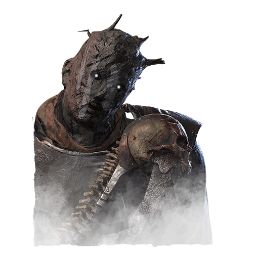
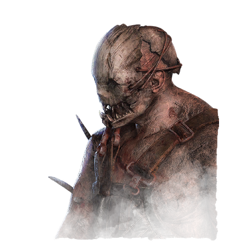

由玩家整理的 Dead by Daylight 技能百科：每個技能都有分類和推薦搭配
第一次接觸 DBD？照著這四步認識這個遊戲
一場比賽由 1 位殺手對上 4 位人類。人類要修好 5 台發電機、打開大門逃離；殺手則要擊倒人類，把他們掛上鉤子獻祭給惡靈。
每場比賽最多帶 4 個技能。每位角色有 3 個專屬的「傳承技能」，培養後其他角色也能使用。本站依用途替每個技能貼上標籤，方便你找到需要的技能。


每位殺手都有一張雷達圖，從追逐、巡場、控場、情報、隱蔽五個面向評分。新手建議從操作直覺的幽靈殺手、陷阱殺手、軍團開始。
不挑殺手、帶了就有用的四個技能：兩個拖慢修機、一個找人、一個讓人類難以治療。把滑鼠移到技能上可以看說明。
每週可用碎片直接購買的四個技能
距離下次刷新：--